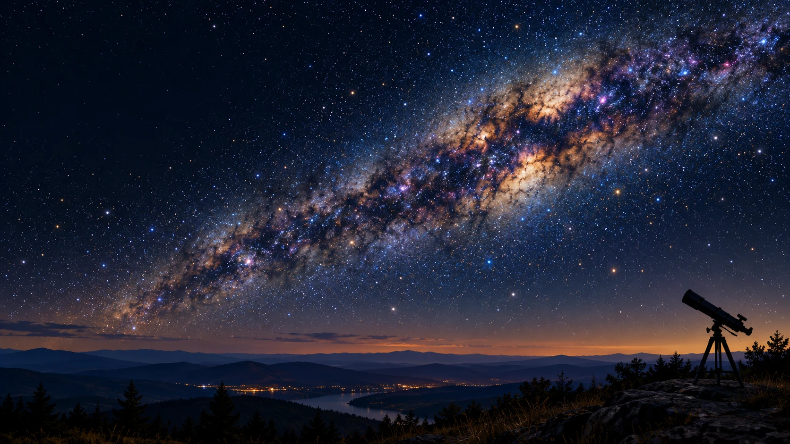

연주시차와 별까지의 거리
시차의 원인 · 6개월 간격 · 연주시차와 거리의 관계
혼자 탐구연주시차
별과 우주 · 중2 과학
수업에서 개념을 먼저 정리한 다음, 시뮬레이터를 직접 움직여 보고 관측 활동으로 한 번 더 확인하는 순서로 만들었습니다.
별까지의 거리를 수치로 계산하는 부분은 성취기준에 없는 내용이라 수업 페이지의 「확장」 탭에 따로 모아 두었습니다. 우주 탐사는 이번 6차시에 넣지 않았습니다.

기존 8개 자료의 예측·탐구·관측 기록·확인 문제를 이어서 사용할 수 있습니다. 아래 번호는 탐구 자료 번호입니다. 위 6차시와 연결해 필요한 주제를 골라 보세요.
아래 네 자료에서 시뮬레이터를 조작하고 결과를 비교합니다. ① 각도로 재기(연주 시차) → ② 밝기와 거리의 관계 → ③ 등급으로 재기 → ④ 색으로 온도 읽기
6개월만 기다리면 됩니다. 눈앞의 연필로 시작해, 지구 공전 궤도라는 관측 기준선으로 별까지의 거리를 잽니다.
응원봉은 왜 멀수록 어두워 보일까? 조도 측정 앱으로 거리와 빛의 세기를 직접 재어 관계를 찾습니다.
밝게 보이는 별이 정말 밝은 별일까? 시리우스와 베텔게우스를 견주며 '보이는 밝기'와 '진짜 밝기'를 가릅니다.
용광로 쇳물의 색이 식으며 달라지듯, 별의 색도 온도를 알려 줍니다. 청색 별이 적색 별보다 표면 온도가 높습니다.
별 하나에서 눈을 들어 별의 무리, 은하, 그리고 우주 전체로 시야를 넓힙니다. 아래 네 탐구 자료로 살펴봅니다. 우주 탐사 자료 두 개는 이번 6차시에 넣지 않았습니다.
밤하늘을 가로지르는 뿌연 띠의 정체. 우리는 우리은하를 밖에서 본 적이 없는데, 어떻게 그 모양을 알아냈을까요?
천체 관측 프로그램으로 궁수·오리온·황소·전갈자리를 훑으며 성운과 성단을 직접 찾아 특징을 비교합니다.
방출·반사·암흑 성운, 그리고 산개 성단과 구상 성단. 말머리성운은 왜 검게 보일까요?
풍선에 붙임딱지를 붙이고 불어 봅니다. 멀리 있는 것일수록 더 많이 멀어지는 이유를 손으로 확인합니다.
정수기·에어쿠션 운동화·GPS·형상기억합금 안경테. 우주로 나간 기술이 어떻게 내 책상까지 왔을까요?
다누리가 남긴 성과를 분석해 탐사 대상·방법·활동을 담은 나의 탐사 계획서를 만듭니다. 블록 질문에 최종 답을 쓰는 마무리 차시.
옆으로 넘길 때마다 재는 자가 한 단계씩 커집니다. 우주비행사에서 시작해 우주정거장과 달, 행성들을 지나 태양에 닿고, 거기서 다시 여러 종류의 별과 성운을 거쳐 우리은하와 관측 가능한 우주까지 — 모든 천체가 실제 비율 그대로 놓여 있습니다.
💡 오리엔테이션에서 3~5분.
태양까지 넘기는 데 몇 번, 거기서 우리은하까지 다시 몇 번이 걸리는지 세어 보게 하면
「태양계가 우주의 거의 전부」라는 감각이 스스로 무너집니다.
태양을 지나면 백색왜성 · 적색거성 · 초거성(베텔게우스)이 차례로 나와서
새 2~3차시 별의 등급 · 색과 온도로 그대로 이어집니다.
⚠️ 성단은 나오지 않습니다 — 새 5차시 「성운과 성단」에서 성단은 따로 보여 주세요.
영어 사이트지만 천체 이름 위주라 읽을 것이 거의 없습니다 · 인터넷 연결 필요